Operations Automation•Revenue Operations•Business Development•AI Systems
I build automation systems, AI-powered operations, revenue pipelines, and scalable business processes that help organizations grow faster with fewer manual tasks.
I sit at the intersection of operations, automation, and revenue, the person who turns a fragmented back office into something that scales without more headcount.
I design the systems that let small, fast-moving teams operate like much larger ones. That means Airtable bases wired into Salesforce, Make.com, and Zapier instead of spreadsheets that only one person understands; AI agents that draft reports and meeting summaries instead of eating an afternoon; and CRM pipelines built to survive 1,000+ leads a month without anything falling through the cracks.
My background spans revenue operations, growth and performance marketing, business development, and applied data, built across consultancies, edu-travel and hospitality groups, a biotech startup, and a venture studio, in Indonesia, Australia, the USA, and Hong Kong. I've run the automation layer, the outbound engine, and the reporting stack, often on the same project, which is what makes me useful to teams that don't yet have a dedicated person for each.
Underneath all of it is the same instinct: find the manual, repeatable, error-prone step, and replace it with a system that doesn't need to be remembered, only maintained.
1,000+
Qualified leads generated per month
20%
Pipeline-to-close conversion rate
169%
Organic follower growth delivered
100K+
Reach on a single LinkedIn article
Experience
Project-level detail, not resume bullets
Every role below is broken into the actual systems and campaigns I built, the problem, the approach, the tools, and what it moved.
ASP Training & Consultancy
System Operations Manager Sydney, Australia (Remote) · February 2026 to Present
Automation & Ops
Operations Automation Platform
Centralizing a fragmented back office, spreadsheets, disconnected CRMs, manual payroll, into one Airtable-based source of truth for an Australian training and coaching consultancy.
Architected a hub-and-spoke Airtable base connecting Salesforce, Make.com, Zapier, Google Workspace, Trainerize, Softr, and Dropbox, so client, trainer, and financial records update from a single write point instead of five separate tools.
Replaced manual payroll and commission spreadsheets with Make.com scenarios that pull attendance, session completion, and sales data on schedule, apply tiered commission logic, and push finalized figures to a payroll-ready table.
Designed multi-step approval and decision-tree automations for client onboarding, eligibility checks, contract generation, and system provisioning, without manual handoffs between sales and operations.
Built role-based access and audit logging into the base so finance, coaching, and admin teams see only what's relevant while leadership keeps one reporting view.
AirtableMake.comZapierSalesforce
5+
Systems unified
Same-day
Payroll close
0
Duplicate entry points
Automation & Ops
All Star Academy & All Star Active Apps
Owning the application layer members and trainers actually touch, the Softr-built client apps and the white-labeled Trainerize experience.
Managed Softr application configuration and Airtable-backed data sync for All Star Academy and All Star Active, keeping member records, program assignments, and permissions consistent in real time.
Administered Trainerize white-label setup for trainer rosters and client-facing branding, coordinating changes with coaching staff without disrupting active client programs.
Set up member/trainer/admin permission tiers across Softr and Trainerize so onboarding a new trainer is a configuration change, not a manual rebuild.
Provided first-line operational support, triaging access issues and data mismatches between Airtable, Softr, and Trainerize before they reached end users.
SoftrTrainerizeAirtable
2
Client-facing apps
Real-time
Data sync
Tiered
Permission model
Automation & Ops
Website & TrueLoyal Loyalty Platform
Extending the consultancy's WordPress site with a secure, embedded loyalty program built on the TrueLoyal platform.
Maintained and extended the WordPress site using HTML, CSS, JavaScript, and PHP, building custom plugin functionality where off-the-shelf plugins fell short.
Integrated TrueLoyal into WordPress via REST APIs, implementing JWT authentication so member point balances and rewards stay session-secure between the site and loyalty backend.
Built embedded widgets surfacing loyalty status and reward activity directly inside member-facing pages, avoiding an off-site redirect that would hurt engagement.
Documented the authentication flow and API contracts so future changes to either system don't silently break the integration.
WordPressPHPREST APIJWT
JWT
Secured integration
Custom
Plugin development
In-page
Embedded widgets
Automation & Ops
AI, Finance & Recruitment Operations
Layering AI agents and financial/recruitment tooling on top of the operations base to cut manual reporting and admin hours.
Integrated Claude into daily operations to draft meeting summaries, generate reports, and automate recurring content after client and coaching calls.
Managed Xero bookkeeping workflows and reconciled entries against Australian taxation requirements, keeping financial records audit-ready.
Ran SEEK recruitment postings and applicant tracking for open coaching and admin roles, coordinating shortlists with hiring managers.
Built executive and sales-analytics dashboards pulling from the Airtable base so leadership can check pipeline, revenue, and delivery metrics on demand.
ClaudeXeroSEEKPower BI
Live
AI-assisted reporting
Ongoing
Xero reconciliation
Live
Executive dashboards
VierApparatus
Founder & Operations Lead Remote, Indonesia · January 2026 to Present
Research & Technical
Scientific Learning & Review Platform
Founded and run a scientific learning and review platform: biology learning modules, editorial articles, scientific product reviews and a software section.
Automation & Ops
Content System & Editorial Workflow
Built the admin system for planning, writing and publishing: an article editor with reference checks, a Planner for tasks and deadlines, module and product management, and contributor accounts with per-area permissions.
Automation & Ops
Research Data & Outreach Automation
VierCRM scrapes more than 1,000 data points a day from Google and business websites. Template e-mails are sent automatically from the VierApparatus info address.
Growth Marketing
Design & Social Publishing
DCE generates more than 8,000 designs from product data alone, and schedules LinkedIn and Instagram publication through its Buffer integration.
Growth Marketing
Cloudflare, Analytics & SEO
Connected and configured Cloudflare for the site, including Workers deployment, DNS and image storage. Tracked results in Cloudflare, Google Search Console and GA4, and ran SEO audits with Ahrefs.
Independent Property Sales
Independent Property Sales Agent Remote, Indonesia · June 2025 to Present
Business Development
Commercial & Hospitality Property Sourcing
Source and market commercial and hospitality properties through broker networks, direct outreach and independent market research. Build property catalogs and investment briefs covering location, ADR, occupancy, RevPAR, revenue forecasts, seasonality and local market conditions.
Business Development
Owner, Broker & Buyer Coordination
Coordinate with property owners, brokers and prospective buyers to qualify leads, present opportunities, negotiate terms and support transactions with deal values of up to IDR 500 million.
Five Pillars Edutravel
International Relations and Partnership Manager Denpasar, Bali (Hybrid) · August 2025 to April 2026
Business Development
Australia & USA Partnership Development
Opening and managing international education-travel partnerships across the Australian and American regions, including a university-level relationship with the University of San Diego.
Identified and prioritized university and corporate partnership targets across Australia and the USA, building a pipeline segmented by region, program type, and decision-maker seniority.
Built pitch decks and presentations tailored to each partner category, university international offices, corporate travel buyers, agent networks, instead of one generic deck.
Led outreach and proposal development for the University of San Diego partnership, coordinating program logistics ahead of MoU drafting.
Structured a cohort model targeting 50+ participants per delivered program, with per-participant packages priced around IDR 3,000,000 in program-linked revenue.
CRMPowerPointGoogle Workspace
50+
Participants per cohort
~IDR 3M
Revenue / participant
2
Regions (AU, USA)
Business Development
High-Volume Outbound & Lead Pipeline
Running the outbound engine that feeds the partnership pipeline, CRM-driven lead generation at a volume most in-house teams don't sustain.
Generated 1,000+ qualified leads per month through CRM list-building and enrichment, segmented by institution type and prior engagement.
Executed 40+ targeted cold emails and 10+ cold calls daily with structured follow-up sequences, converting 40% of engaged leads to scheduled meetings.
Tracked every touchpoint in CRM to avoid duplicate outreach across a 1,000+ lead/month volume, closing 20% of qualified pipeline into active partnership discussions.
Ran weekly pipeline reviews to flag stalled conversations and reassign follow-up priority based on response recency.
CRMCold EmailCold Calling
1,000+
Leads / month
40%
Meeting conversion
20%
Pipeline close rate
Business Development
MoUs, Proposals & Travel Planning
Turning partnership conversations into signed agreements and deliverable itineraries.
Drafted MoUs for corporate, agent, and university collaborations, aligning legal language with what travel-agent partners could operationally deliver.
Coordinated with travel agents to design competitive international itineraries, balancing program cost against the target IDR 3M/participant revenue band.
Presented finalized proposals to senior stakeholders on both sides, adjusting terms in real time based on feedback.
Maintained a proposal-status tracker so nothing stalled between legal review, agent confirmation, and stakeholder sign-off.
MoU DraftingCRMItinerary Planning
Multi-party
MoUs drafted
Full
Itinerary cycle
Senior
Stakeholder presentations
Business Development
Cross-Border Program Coordination
Keeping the Australian and American partnership tracks moving in parallel without one region starving the other of attention.
Split weekly capacity between Australian and American outreach based on pipeline stage, prioritizing whichever region was closer to signature.
Coordinated internally between sales, program design, and travel-agent partners so commitments matched what delivery could actually staff.
Fed closed-partnership data back into CRM segmentation, refining which institution types converted best per region.
Supported handoff from partnership-signed to program-delivered, flagging capacity or timeline risk before it reached participants.
CRMGoogle WorkspaceSlack
2
Regions run in parallel
Full
Pipeline-to-delivery handoff
Continuous
CRM feedback loop
Milestones
Digital Marketing Specialist (Project Contract) Denpasar, Bali (Remote) · November 2025 to March 2026
Growth Marketing
Multi-Client Performance Marketing incl. Charter Yachts Indonesia
Running data-driven Meta and Google Ads campaigns across multiple contract clients, including Charter Yachts Indonesia, on a project basis.
Built campaign plans forecasting budget, ROAS, CTR, CPM, and CPL for each client, including Charter Yachts Indonesia's charter-booking campaigns, before launch, so performance could be judged against a stated target.
Separated prospecting and retargeting audiences per client, monitoring CTR, CPC, CPM, ROAS, and frequency weekly, and replacing underperforming creatives through structured A/B testing.
Reallocated budget toward higher-performing audience segments mid-flight based on the weekly performance read rather than waiting for campaigns to conclude.
Coordinated cross-team delivery with Ads, SMM, and Design via Slack and Trello to keep creative refresh aligned with performance decay.
Meta AdsGoogle AdsHubSpotSlack
Multi-client
HubSpot pipeline
Weekly
Optimization cycle
Full-funnel
ROAS / CAC focus
Growth Marketing
AI-Accelerated Reporting
Using GPT-5 to compress the campaign-analysis and reporting workload across a multi-client contract.
Applied GPT-5 to accelerate campaign analysis, drafting first-pass performance narratives from raw ad-platform exports before human review and client delivery.
Automated recurring reporting templates so weekly client updates required editing rather than rebuilding from scratch each cycle.
Used AI-assisted analysis to refine messaging strategy per client based on which ad copy variants actually drove CTR and conversion.
Kept a human-in-the-loop review step on every AI-drafted report before client delivery to catch misattributed metrics.
GPT-5HubSpotGoogle Sheets
Compressed
Reporting cycle
Multi-client
Cadence maintained
Reviewed
AI output, every time
Silk Road Group
Sales and Marketing Manager Canggu, Bali · May 2025 to March 2026
Growth Marketing
Restaurant Opening Campaign & Videotron Project
Led the influencer and content strategy behind the group's restaurant opening event, in partnership with PT Integrasi Mulia Teknologi, targeting the Russian-speaking market in Bali.
Coordinated an opening-night campaign with 40+ micro-KOLs targeting the Russian market in Bali, including talent such as @oksana_larina99, briefing each creator on tone and deliverables.
Designed a physical KOL activation, wrapped stones with silk ink and personalized invitation cards, signed and displayed on a branded wall, turning a gimmick into genuine user-generated content.
Served as project manager for the opening Videotron placement with PT Integrasi Mulia Teknologi, keeping the opening video live on the videotron for a full week after the event.
Directed on-site capture into 20+ UGC posts and 100+ reusable photo/video assets for ongoing use across the brand's channels.
Meta Business SuiteInfluencer Coordination
80%+
Follower increase
Rp 40 to 50M
Revenue / day, one week
5,865
Opening-week views
Growth Marketing
Agency & KOL Content Governance
Overseeing how the group's collaborating creative agency executes brand content, and coordinating an ongoing roster of international KOLs.
Reviewed agency creative output against brand tone-of-voice and visual guidelines before publishing, sending revisions back when content drifted from standard.
Managed an ongoing roster of micro-to-macro Russian and international KOLs, briefing talent and occasionally stepping in as on-camera talent for time-sensitive content.
Ran marketing performance audits across agency output, delivering ROAS, CTR, and efficiency recommendations directly to leadership.
Balanced campaign budgets across Meta Ads, Google Ads, and e-commerce advertising with finance, adjusting spend as audits surfaced under/over-performing channels.
Meta AdsGoogle AdsPower BI
Ongoing
KOL roster managed
Direct
Leadership reporting
Cross-platform
Ad spend oversight
Growth Marketing
GoFood & GrabFood Merchant Growth
Growing food-delivery revenue for the group's venues through merchant-side optimization and platform ads.
Optimized GoFood and GrabFood merchant listings, menu structure, photography, pricing tiers, to lift conversion from platform search to order.
Ran GoFood Ads and GrabFood Ads, monitoring impression share and conversion by menu category to reallocate budget toward the highest-converting dishes.
Built monthly performance reports from merchant dashboards, feeding results into the wider Power BI reporting built for ownership.
Coordinated menu and pricing updates with kitchen and finance so platform promotions never undercut margin targets.
GoFood MerchantGrabFood MerchantPower BI
~Rp 5 to 6M
Monthly growth
2
Platforms optimized
Monthly
Reporting cadence
Growth Marketing
Healthy Menu Partnership: Top Gym & Invintus Gym
Building a cross-promotional healthy-menu partnership between the group's venues and two Bali fitness communities.
Planned a healthy-menu partnership strategy pairing the group's food offering with the fitness-focused customer base at Top Gym and Invintus Gym.
Coordinated co-branded promotion across both gyms' member channels and owned social presence, aligning launch timing to membership cycles.
Tracked redemption and repeat-visit data to evaluate whether the cross-promotion drove incremental traffic versus cannibalizing existing customers.
Presented a post-campaign evaluation to leadership covering reach, redemption, and recommendations for renewing the partnership.
Meta Business SuitePartnership Tracking
2
Gym partnerships
Full
Campaign-to-evaluation cycle
Cross-channel
Co-promotion
Greenstand
Digital Marketing Specialist Alaska, USA (Remote) · June 2025 to September 2025
Growth Marketing
WordPress & Website Marketing
Managing website marketing and analytics for a global, intercultural reforestation-tech audience.
Managed website content, structure, and on-page SEO through WordPress CMS, publishing updates without needing developer involvement.
Instrumented Google Analytics 4 across key site paths to see which content drove donor/volunteer engagement versus passive traffic.
Ran technical SEO passes, metadata, schema, internal linking, to improve organic visibility for reforestation and tree-tracking content.
Coordinated site updates with the content calendar so blog publishing and site changes reinforced each other.
WordPressGA4SEMrushAhrefs
Site-wide
GA4 instrumentation
Ongoing
Technical SEO
Global
Intercultural audience
Growth Marketing
LinkedIn Thought Leadership & Publishing
Directing Greenstand's LinkedIn presence, including publishing original written pieces on ecotech ethics.
Directed LinkedIn content strategy via LinkedIn Campaign Manager and Hootsuite, planning a cadence around the reforestation and data-ethics narrative.
Authored and published "Ethical Data in Ecotech: Balancing Transparency, Privacy, and Participation," which reached 100,000+ views on LinkedIn.
Tracked post-level engagement to identify which topics resonated most with a professional audience.
Used performance data from top posts to inform the next cycle's content topics.
LinkedIn Campaign ManagerHootsuite
100,000+
Reach, one article
Native
LinkedIn publishing
Data-driven
Content calendar
Growth Marketing
Email Automation & Segmentation
Building email marketing automation to nurture Greenstand's supporter and stakeholder base.
Built email automation flows in Mailchimp and HubSpot, segmenting supporters by engagement level and geography.
Ran A/B tests on subject lines, send times, and format, applying winning variants to subsequent sends.
Set up segmentation so intercultural, multi-timezone recipients received sends aligned to local engagement windows.
Monitored open, click, and unsubscribe rates per segment to catch fatigue before it affected the whole list.
MailchimpHubSpot
A/B tested
Every send
Multi-segment
Audience model
Cross-timezone
Scheduling
Growth Marketing
SEO/SEM & Performance Visualization
Running paid and organic search programs and turning results into leadership-ready dashboards.
Ran SEO and SEM campaigns using SEMrush, Ahrefs, Google Ads, and Meta Business Suite to grow organic and paid visibility.
Delivered campaign performance visualization in Power BI and Tableau, translating raw ad and search data into dashboards non-technical stakeholders could read directly.
Benchmarked keyword and ad performance against prior periods to flag genuine growth versus seasonal noise.
Adjusted paid spend between Google Ads and Meta based on which channel actually drove qualified engagement.
SEMrushGoogle AdsPower BITableau
Multi-platform
SEO/SEM program
2
BI tools deployed
Intercultural
Audience reach
Rouge International & Rouge Ventures
Business Development Representative Hong Kong, China (Remote) · December 2024 to June 2025
Business Development
Startup BD Support: Acorn Collective, AgroScout
Supporting portfolio startups' fundraising readiness and investor outreach as part of Rouge Ventures' venture-support function, alongside colleagues including Lisa Cheuk and Morgana Lee.
Organized and enriched investor and partner contact databases for portfolio companies including Acorn Collective and AgroScout, prioritized by stage-fit and sector focus.
Coordinated CRM-based fundraising outreach on behalf of portfolio startups, structuring follow-up sequences so investor conversations didn't go cold.
Supported pitch-material preparation and investor Q&A logistics, coordinating scheduling across time zones.
Operated in a coordination and operational-support capacity, organizing pipelines and logistics rather than personally closing capital.
HubSpot CRMLinkedIn Sales Navigator
2+
Portfolio startups supported
Structured
Investor outreach
Cross-timezone
Coordination
Business Development
InvestHK & Accelerator Coordination
Coordinating startup accelerator logistics and stakeholder relationships involving InvestHK.
Coordinated communications and scheduling between portfolio startups and InvestHK-linked stakeholders as part of accelerator program execution.
Maintained accelerator program documentation and stakeholder records so handoffs between program stages didn't lose institutional context.
Supported preparation of accelerator-stage materials and status updates for InvestHK-facing checkpoints.
Flagged program risks, timeline slippage, missing documentation, to leadership ahead of formal review points.
HubSpot CRMGoogle Workspace
Multi-stakeholder
Coordination
Documented
Accelerator stages
Proactive
Risk flagging
Business Development
AgTech Accelerator Pilot: Lum Lam Chi, Chaiyaphum
Coordinating an on-the-ground pilot study in Lum Lam Chi, Ban Khwao District, Chaiyaphum, Thailand, as part of the AgTech Accelerator Programme.
Coordinated pilot-study logistics for the field trial in Lum Lam Chi, aligning local stakeholder availability with the program's testing timeline.
Supported documentation of pilot outcomes for reporting back to accelerator leadership and relevant portfolio startups, including AgroScout's field-facing work.
Liaised between the Hong Kong-based team and on-the-ground contacts to keep the pilot on schedule despite the geographic distance.
Compiled pilot learnings into a format usable for the next accelerator cohort rather than leaving them siloed with the field team.
Google WorkspaceCRM
1
Field pilot coordinated
Cross-continent
Stakeholder alignment
Documented
For next cohort
Business Development
Executive LinkedIn, CRM & RevOps Alignment
Managing the Board Director's LinkedIn presence and building the reporting layer that kept lead tracking and RevOps aligned.
Managed executive LinkedIn presence and LinkedIn Ads for the Board Director, strengthening personal branding and visibility.
Built and maintained a contact database of 1,000+ leads daily, executing 100+ personalized cold emails per day via GMass and Email Meteor.
Produced newsletter and campaign content in Mailchimp and managed HubSpot CRM for pipeline tracking across the portfolio.
Delivered stakeholder presentations via Power BI dashboards and Google Slides, improving lead-tracking visibility and RevOps alignment.
LinkedIn AdsGMassMailchimpPower BI
1,000+
Leads / day database
100+
Personalized emails / day
PT. Pawitra Jaya Sakti Biotek
Social Media Specialist Intern Surabaya, East Java · November 2024 to March 2025
Growth Marketing
Niche Organic Growth Strategy
Growing organic social presence for an early-stage biotech startup in a low-attention, technical niche.
Designed a niche-focused content strategy for a biotech audience that typically sees little social engagement, prioritizing formats that could break through despite the narrow niche.
Ran structured A/B tests on formats, hooks, visuals, and audio, tracking which combinations actually moved views and engagement.
Coordinated with designers to align visual execution with the tested strategy, keeping revisions fast during high-testing periods.
Iterated weekly based on Instagram analytics to double down on formats that worked and drop the ones that didn't.
InstagramMeta Business SuiteCanva
169%+
Organic follower growth
1,000+
Views on multiple posts
Growth Marketing
Meme & Educational Content for BOFU/MOFU
Producing both relatable meme content and structured BOFU/MOFU product carousels for the same biotech brand, two very different registers for one audience.
Produced meme-based content translating lab-life humor into shareable posts that outperformed straight corporate content on views.
Built product-focused carousel content for BOFU and MOFU funnel stages, spec sheets and feature call-outs for lab equipment like ELISA processors and FTIR spectroscopy units, formatted for Instagram swipe-through.
Balanced formal, portfolio-style corporate video against looser meme content, using analytics to decide which register got more investment each week.
Delivered educational content explaining lab concepts in plain language to widen appeal beyond a purely technical audience.
InstagramCanva
Shipped
BOFU/MOFU carousels
Dual-register
Content strategy
Growth Marketing
Content Performance Analysis
Turning Instagram analytics into a repeatable decision process for what to make next.
Tracked view, reach, and engagement data across every post format to build a working sense of what performed in a biotech-adjacent niche.
Fed performance data back into the content calendar weekly, prioritizing proven formats and topics over untested ideas.
Flagged underperforming content types early so design time wasn't spent on formats already shown not to work.
Delivered simple, digestible performance summaries to the team rather than raw analytics exports.
Instagram InsightsMeta Business Suite
Weekly
Analytics review
Data-driven
Content calendar
Madhava Enterprises
Social Media Intern Denpasar, Bali · April 2024 to July 2024
Growth Marketing
Multi-Brand Content: Madhava Asia & Bahana Guest House
Managing content and copy across two related brands with distinct audiences and tone.
Developed separate content strategies for Madhava Asia and Bahana Guest House rather than one shared brand voice, adjusting tone, format, and cadence per audience.
Wrote copy across Instagram, TikTok, Facebook, LinkedIn, and YouTube tailored to each brand's positioning, testing which platforms actually returned engagement per brand.
Coordinated visual and copy handoffs with designers so campaign assets shipped on the same schedule across both brands.
Ran KOL/influencer campaigns to extend reach beyond owned channels, briefing creators per brand's specific tone requirements.
Meta Business SuiteHootsuiteGoogle Analytics
+1.2%
Engagement via copywriting
+2%
Engagement via data-driven strategy
+4%
Reach via KOL campaigns
Growth Marketing
Content Review & Quality Control
Reviewing externally-produced KOL and content-team output before it shipped, and stepping in on production when the team was short-staffed.
Reviewed KOL-produced videos from the brand's internal content division, assessing whether each piece captured key selling points and flagging gaps.
Evaluated content-creation and graphic-design outcomes against brand standards, requesting revisions when deliverables fell short before publishing.
Stepped in personally on promotional video production during staffing shortfalls, including short-form promotional content for Bahana Guest House staycation/daycation offers.
Delivered viral-format content exceeding 1,000+ views, applying the same review standard to owned content as to reviewed KOL content.
Meta Business SuiteCanva
1,000+
Views, viral content
Direct
Production support
Mind4Youth
Marketing Researcher Intern San Jose, CA, USA (Remote) · July 2023 to September 2023
Research & Technical
Mental Health Market Research
Researching the mental health and wellness market to inform positioning and messaging.
Researched the mental health and wellness market, analyzing trends, competitor positioning, and digital health behavior.
Applied audience segmentation and social listening (Brandwatch, Talkwalker, Meltwater) to understand how audiences discussed mental health online.
Benchmarked competitors using SEMrush, Ahrefs, SimilarWeb, and Crunchbase to map the landscape by traffic, funding, and market position.
Synthesized findings into a competitor-positioning summary the internal team could act on directly.
BrandwatchSEMrushCrunchbase
Multi-tool
Competitive benchmark
3
Listening platforms
Research & Technical
Dashboards & Campaign Insight Delivery
Building the dashboards and insight deliverables that made the research usable for campaign decisions.
Built dashboards in Tableau, Power BI, and Google Data Studio to visualize market-research and segmentation findings.
Delivered actionable campaign insights derived from the research, translating findings into recommended messaging angles.
Structured dashboards so non-research team members could self-serve answers to common competitive questions.
Iterated dashboard structure based on which views the team actually used.
TableauPower BIData Studio
3
BI tools deployed
Self-serve
Dashboard delivery
Additional Experience
Earlier research & field roles
Research Assistant: Biopesticide Research Lab
Udayana University · Denpasar, Bali · January 2025 to June 2025
Conducted lab experiments using laminar airflow, autoclave, and PCR equipment to develop and evaluate biopesticide formulations. Cultured microbial samples and analyzed genetic data using BLAST, CLC Sequencer, and MEGA X for strain identification, applying SAS and R to interpret experimental data with research-grade accuracy.
Damai Indah Golf Course · BSD City, Tangerang · November 2021 to February 2022
Operated golf course maintenance equipment, mowers, tractors, utility vehicles, and managed irrigation systems across greens, fairways, and landscaping. Performed planting, edging, and bunker upkeep, supporting daily course setup and safety compliance.
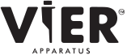
Founder · VierApparatus
A scientific learning and review platform, run on systems I built
VierApparatus publishes biology learning modules, editorial articles, scientific product reviews and a software section. I built and run the content system, the automation behind it and the infrastructure it runs on.
data points scraped per day with VierCRM from Google and websites
8,000+
product designs generated from product data alone with DCE
300k
average unique visitors according to Cloudflare
3,000+
average monthly views in Google Search Console
258
average monthly events in GA4
What runs behind it
Research and lead data
VierCRM scrapes more than 1,000 data points a day from Google results and business websites, and researches each record's latest publication automatically.
Outreach e-mail
Automated template e-mails sent from info@vierapparatus.com, with analytics through Brevo.
Product design at scale
More than 8,000 designs generated from product data alone with DCE, exported as PNG, JPEG, SVG, PDF or HTML.
LinkedIn and Instagram publishing
Automated publication to LinkedIn and Instagram through DCE's Buffer integration, so scheduled posts go out without manual posting.
Learning modules
Built the module system for biology learning: subjects, specializations, levels and modules, with a Planner for writing and review.
Cloudflare setup
Connected and configured Cloudflare for the site: deployment through Workers with OpenNext, DNS, and image storage on R2, with Turso as the content database.
The admin side
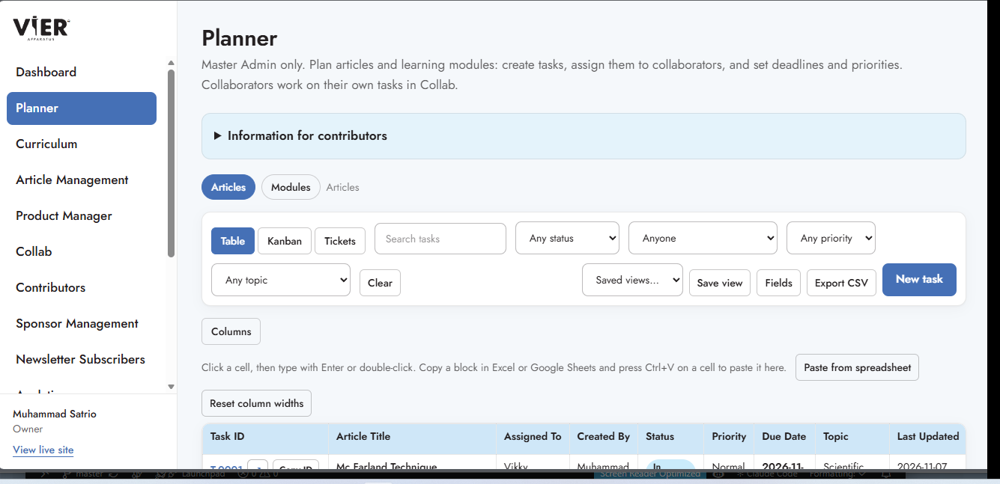
Planner
The planning board for articles and learning modules. The owner creates tasks, assigns them to collaborators and sets deadlines and priorities, and collaborators work on their own tasks in the Collab area.
Table, Kanban and Tickets views, with Articles and Modules tabs
Filters for status, assignee, priority and topic, plus saved views and column fields
Spreadsheet-style editing: type into a cell or paste a block from Excel or Google Sheets
Each task tracks ID, title, assignee, creator, status, priority, due date, topic and last update
CSV export
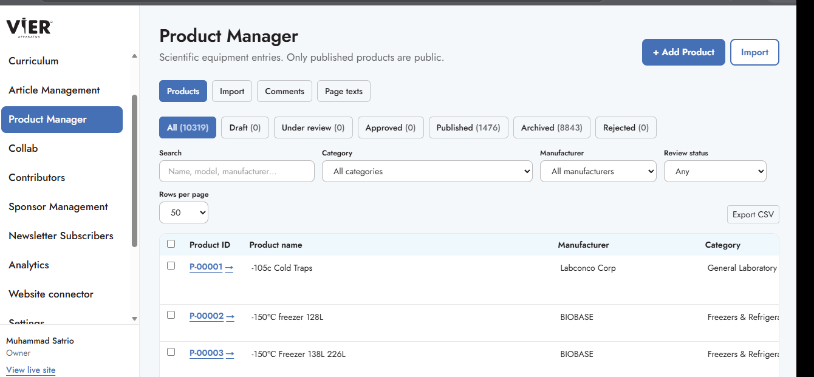
Product Manager
Manages the scientific product entries shown on the site. Only published entries are public, so every entry moves through a review status before it goes live.
Status tabs with live counts: draft, under review, approved, published, archived and rejected
Search by name, model or manufacturer, with category, manufacturer and review-status filters
Add a product by hand or import in bulk, with a choice of rows per page
Separate tabs for reader comments and page texts
CSV export
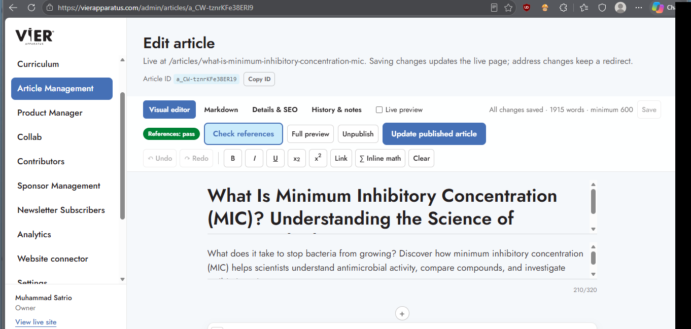
Article editor
Where articles are written, checked and published. Saving changes updates the live page, and changing an article's address keeps a redirect from the old one.
Visual editor and Markdown mode, with Details and SEO, and History and notes tabs
Live preview and full preview before publishing
Word counter against a minimum length, and a reference check that reports pass or fail
Update or unpublish a live article from the same screen
Formatting toolbar with subscript, superscript, links and inline math
Tools I built for VierApparatus operations
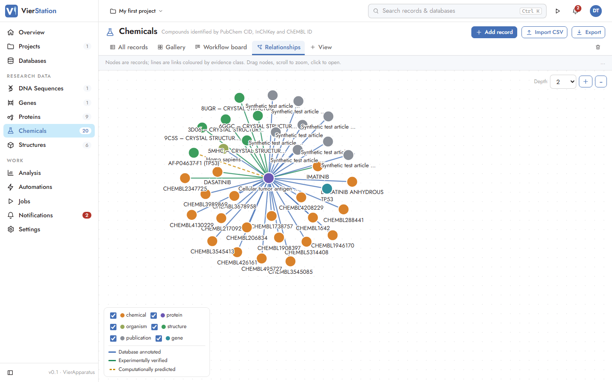
Relationship explorer: chemicals, proteins, structures and publications as one graph
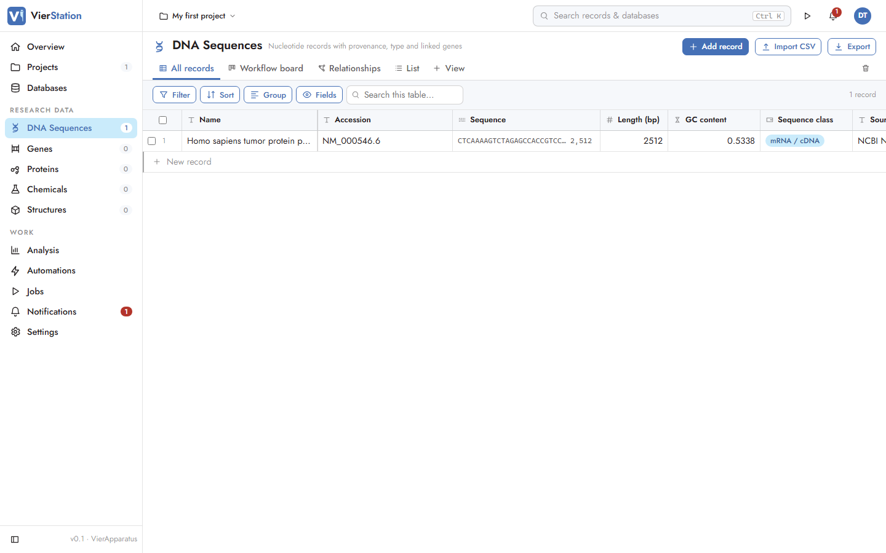
DNA records with accession, length, GC content and sequence class
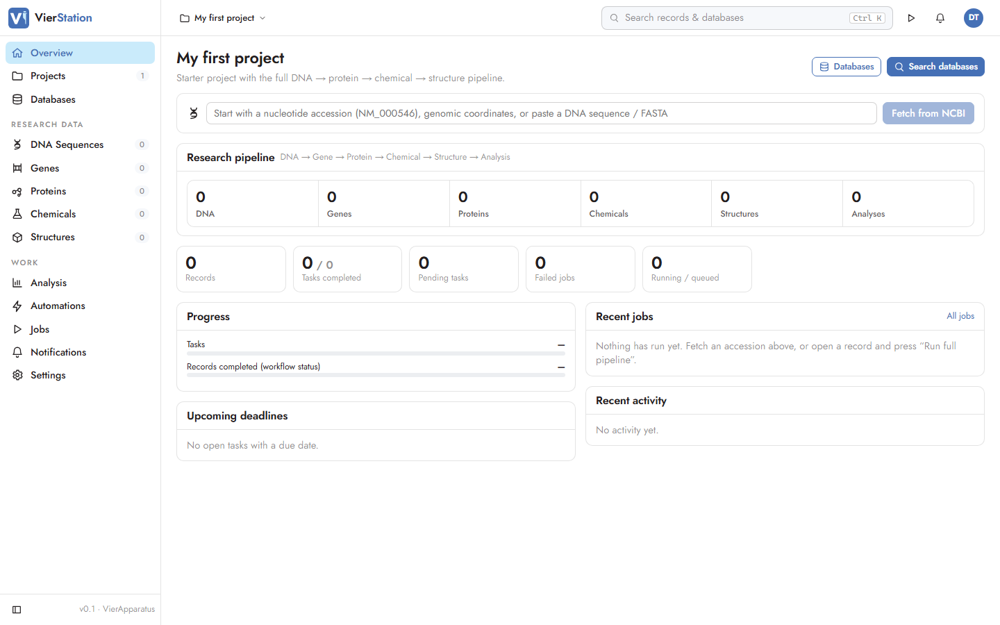
Project overview: the research pipeline from DNA to analysis
Local-first · Public repository
VierStation: Local-first Bioinformatics Workspace
A research workspace for DNA, protein and chemical records. It takes a sequence from raw reads to a phylogenetic tree and a PDF report, and links genes, proteins, compounds and structures in one explorable graph.
Sequence Lab: imports FASTA, FASTQ and ABI chromatograms, checks and cleans reads, merges forward and reverse reads, runs BLAST searches, and aligns sequences.
Phylogenetics: neighbour-joining, UPGMA, maximum parsimony and maximum likelihood trees with bootstrap support, exported as Newick, SVG and PNG with a Python script and a PDF report.
Data sources: NCBI, UniProt, AlphaFold, PubChem, ChEMBL, BindingDB, RCSB and InterPro, with a relationship explorer (Cytoscape) for reactions and pathways.
Runs on your own machine with no account: an offline job queue, automatic backups and a single-file export (.vsws).
A researcher record with the publication found through OpenAlex and its research log
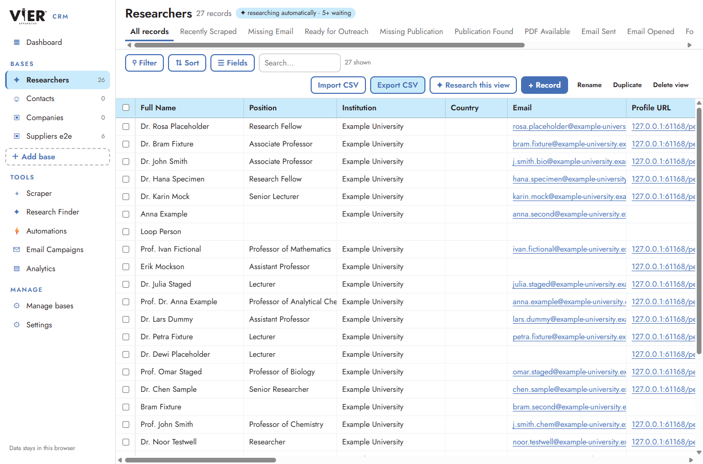
Researchers base with automatic research running in the background
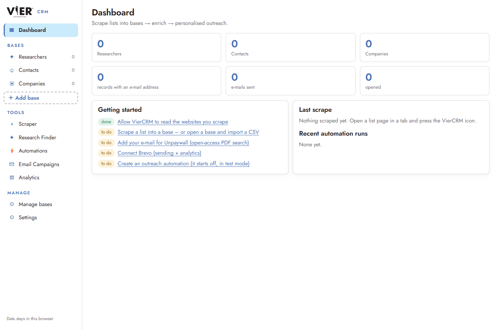
Dashboard: bases, getting-started steps and the last scrape
Chrome extension · Public repository
VierCRM: Browser CRM and Research Finder
A Chrome extension that works as a lightweight CRM inside the browser: researcher, contact and company bases, list and Google Maps scrapers, and automatic publication research. The data stays in the browser.
Generic bases (Researchers, Contacts, Companies, Places and custom tables) stored in IndexedDB, with saved views, filters, and CSV import and export.
Research finder: looks up each researcher's latest publication through OpenAlex, Crossref, PubMed or Europe PMC and arXiv, and fills DOI, access and PDF fields.
Scrapers for list pages and Google Maps results, with an optional read of each business website for contact details.
Automations start in test mode, and outreach e-mail goes through Brevo with analytics. Nothing is sent while test mode is on.
Template editor: layers, data bindings and a live preview
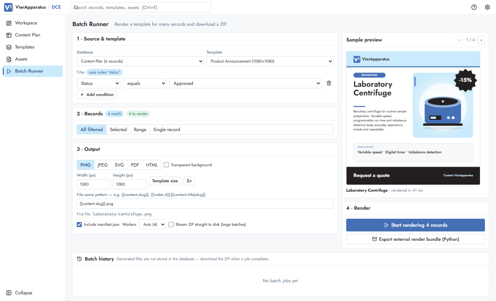
Batch runner: renders filtered records from the content plan into a ZIP
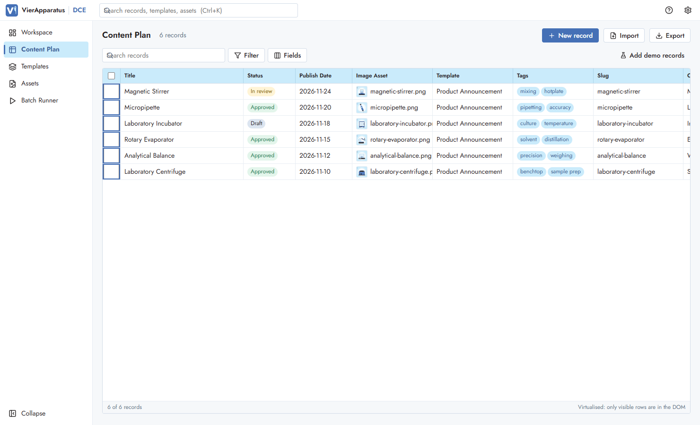
Content plan: records with status, assets and tags
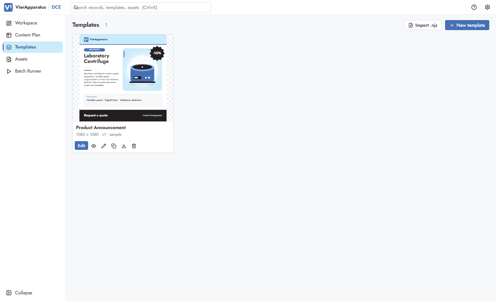
Template library: reusable layouts for batch rendering
Desktop app · Public repository
DCE: Dynamic Canvas Engine
A local-first design studio that renders many on-brand visuals from one template and a content table, then exports them as a single ZIP. It makes product graphics repeatable instead of hand-made.
A canvas editor that draws the same way the batch renderer does, so the preview matches the exported file.
Content plan, templates and assets stored locally in IndexedDB (Dexie), with data bindings, text fitting and conditional visibility.
Batch runner: Web Workers render PNG, JPEG, SVG, PDF and HTML in parallel and stream the ZIP, with pause, resume and cancel.
Content pipeline: drafts posts with Gemini, runs rule and fact checks, and schedules through Buffer, with simulation and approval modes before anything is sent.
ReactTypeScriptViteFabric.jsDexieWeb WorkersElectronGemini APIBuffer API
VierCRM applicant base after Issue tokens (fictional people, masked tokens)The invitation automation: schedule, conditions, then send. It starts off and in test mode
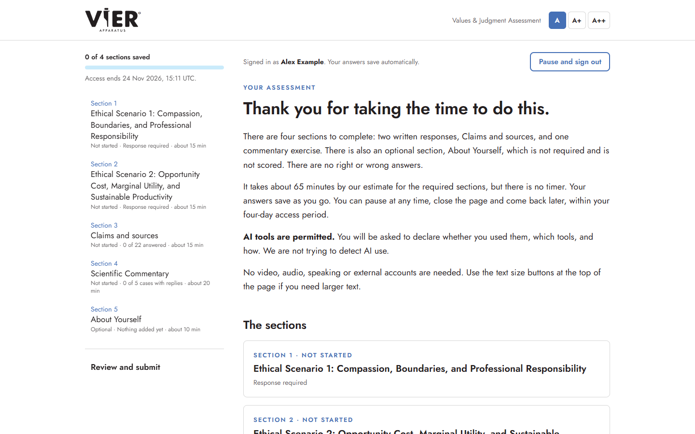
The portal: five sections, no timer, AI tools permitted and declared
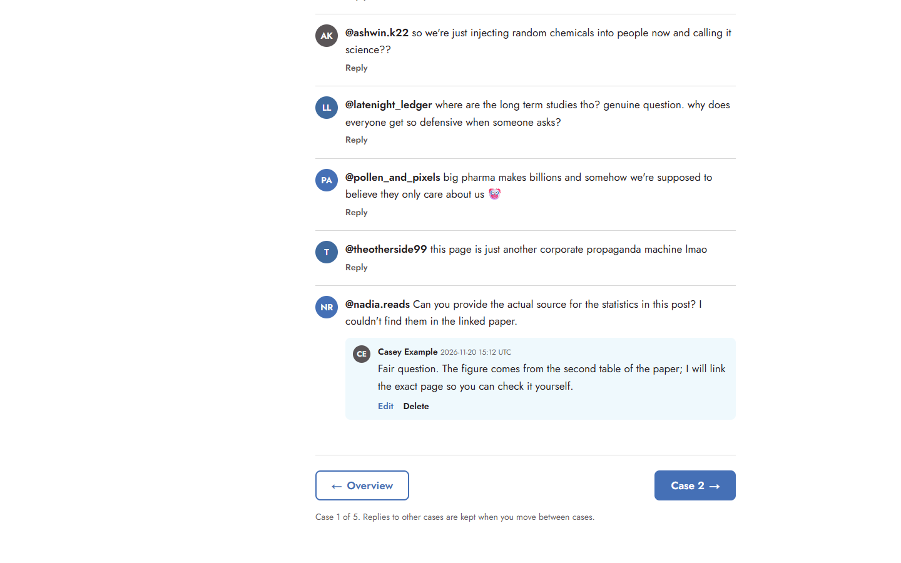
Commentary exercise: reply to individual comments on a fictional post
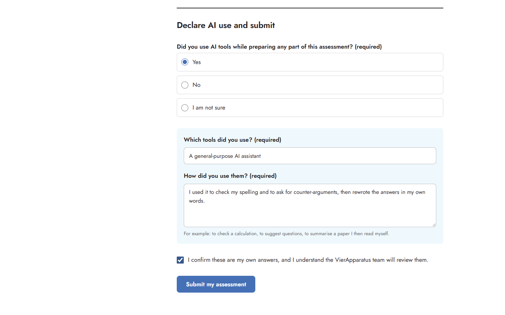
Review and submit, with the AI-use declaration
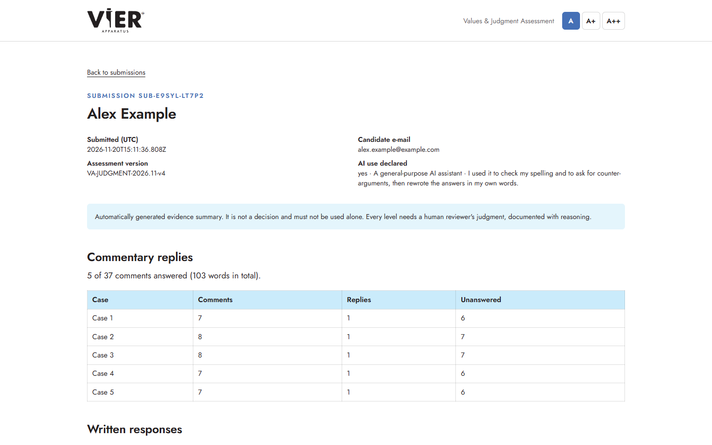
Reviewer area: an evidence summary, never a decision
Operations system · Public repository
VierApparatus Hiring Pipeline: Token-based Assessment System
A hiring process that does not start with a CV. Applicants are invited from VierCRM, sign in with a personal username and a random token, take one written assessment, and the result reaches the reviewers as a single e-mail.
VierCRM issues one random token per applicant through an authenticated API. Only a keyed hash is stored, and the token expires after four days.
An HTML invitation with merge fields for the name and the token goes out from an automation that starts off and in test mode.
The assessment covers ethical judgment, resource trade-offs, checking claims and sources, and replying to harsh online comments. AI use is allowed and declared.
Submitting freezes a snapshot, queues one e-mail with retry, and opens an evidence draft. The reviewers set the levels.
The studio with the example project: library, preview, settings and timeline
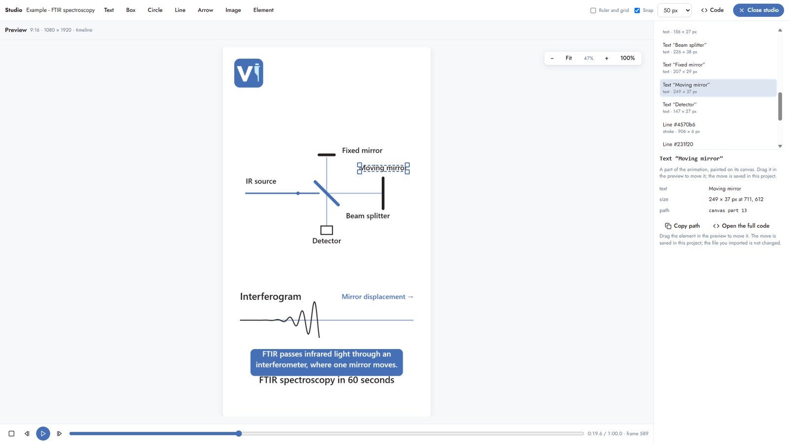
Inspecting a part painted on a canvas: its text, size and place
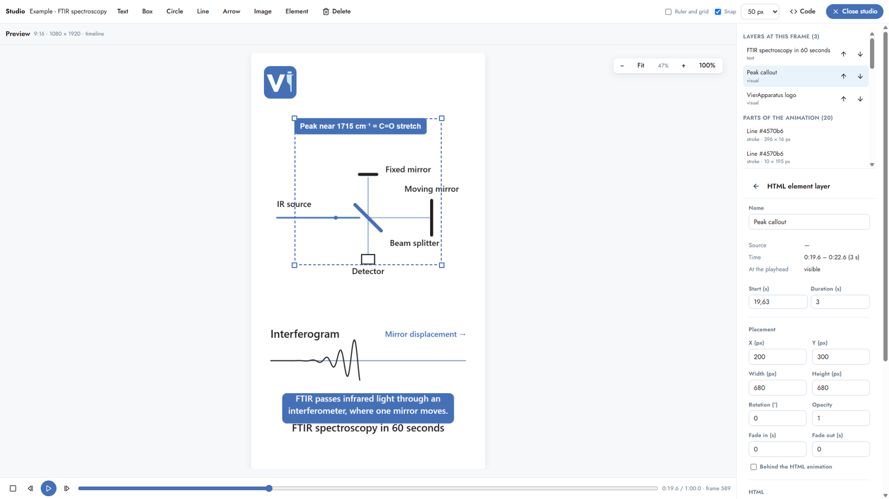
A pasted HTML element becomes a layer; the animation file is untouched
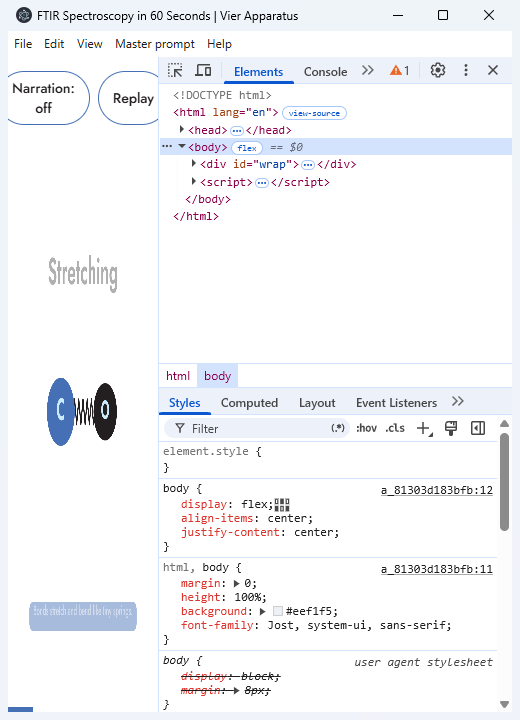
Developer tools for the animation, in its own window
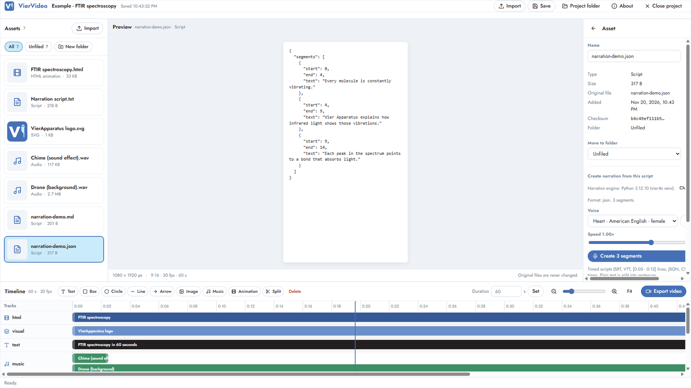
A JSON script, read as three timed narration segments
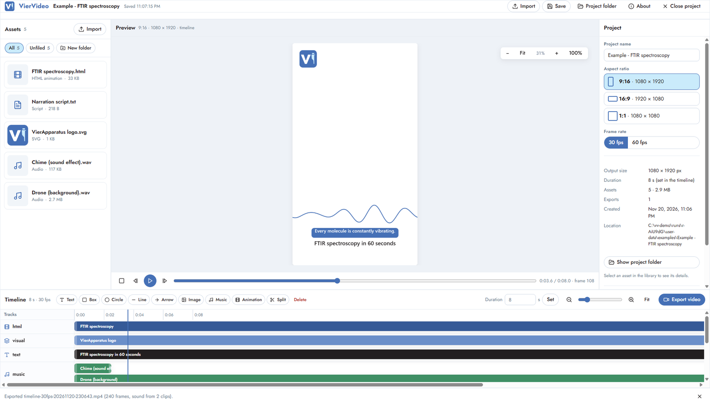
Export finished: 240 frames, sound mixed from 2 clips
Desktop app · Public repository
VierVideo: HTML-to-Video Editor and Narration Studio
AI assistants can write an animation as HTML. VierVideo makes that animation inspectable, editable and exportable as an MP4 with narration, without regenerating it or editing code for every change.
Click a part of the animation, even one painted on a single canvas, and drag it. The move is saved in the project, not in the animation file.
Add text, shapes, images and pasted HTML elements as timeline layers, read and edit the animation's code, or open its own developer tools.
Local narration with Kokoro voices from TXT, Markdown, JSON or CSV scripts, mixed with music into one MP4 (H.264 video, AAC audio).
Rendering runs on a virtual clock, so the same time always gives the same frame. Everything runs offline on your own machine.
Electron 45React 19TypeScriptViteFFmpegKokoro-82MPythonPlaywright
A recruitment process that evaluates how a person reasons, built as a chain of small systems: applicant records in VierCRM, token issuing, an HTML invitation, a candidate portal, and result delivery. Everything below was checked against the source code and the running application.
The problem, and why I built it
Conventional hiring starts by screening CVs. That rewards the school, the employer and the network a person already has, and it asks a small team to read a large pile of documents before it learns anything about how anyone thinks.
I wanted a process that is open to people from any background, looks at reasoning and potential, is short for both sides (one test, no rounds of interviews), and does not depend on someone copying credentials and e-mails by hand for every applicant. Our species is called Homo sapiens, the one that thinks and knows. The process takes that seriously: nobody is expected to know everything, but a candidate should be able to reason, say what they do not know, and change their mind when the evidence says so.
Inclusion and equal opportunity
Potential should not be limited by schooling, previous employers, institutional prestige or professional connections.
Willingness to learn
We do not expect applicants to know everything. We value people who know what they do not know.
Intellectual curiosity
The questions reward asking how and why, not reciting a position.
Independent thinking
The answer should show the candidate's own reasoning, not a generic one.
Courage to question
Including established assumptions, and one's own.
Correcting mistakes
Noticing an error and fixing it counts as a strength, not as a failure.
The pipeline, stage by stage
Job publication
Vacancies go to relevant job portals and channels, aimed at attracting people with different backgrounds instead of a narrow set of conventional qualifications.
Collection in VierCRM
Applications are gathered in VierCRM, a Chrome extension I built. It is the single working environment for applicant records, and the data stays in the browser.
Data curation
One clean record per applicant, with a full name and an e-mail address. Structured, consistent records are what make the later steps automatic and safe: a missing name, a name that another record already holds, or an address that is present but invalid stops a token from being issued.
Invitation e-mail
An HTML template with merge fields for the applicant's name and token, an explanation of the assessment, a button to the portal, the expiry notice and sign-in steps.
Credentials
Issue tokens in VierCRM asks the assessment server for one random token per selected applicant and writes the token and its expiry back into the record.
Assessment and result
The candidate signs in, answers (autosaved), declares AI use and submits. The result arrives as one e-mail, and the reviewers also see an evidence summary.
How the credentials work
The credential layer is the part I wanted to be least improvised, so I describe it from the code, not from memory. The server lives at test.vierapparatus.com.
Username
The applicant's full name, normalised for case, spaces and trailing separators. The VierCRM record id is the candidate's identity, so a corrected name renames the same candidate and keeps the answers. A name already held by another record is refused.
Token
VA-XXXX-XXXX-XXXX-XXXX: 16 random symbols from a 32-symbol alphabet without I, O, 0 and 1, so it is easy to type. That is 80 bits from the operating system's random generator. It is never derived from the name.
Storage
In the Turso (libSQL) database only a keyed HMAC-SHA256 digest of the token is stored, with the expiry. The token itself is returned once to VierCRM, which keeps it in the applicant's record so the team can e-mail it.
Issuing
POST /api/issuer/tokens, protected by a bearer key that is separate from the reviewer password and compared in constant time. Up to 20 people per request, and 20 new tokens per UTC day. A still-valid token is replaced only when the recruiter explicitly chooses Re-issue.
Expiry
Four days from issue. The candidate's session cookie lasts exactly as long as the token. Expired, never-completed sessions are removed by a daily maintenance job.
Sign-in
Username plus token. A wrong token and an unknown name give the same message. At most 8 attempts per name and 40 per address in 15 minutes. One active browser session per candidate, in an HttpOnly, SameSite=Strict cookie whose value is also stored only as a digest.
After submission
A candidate who has submitted cannot sign in again or be issued another token.
VierCRM
Issue tokens for the selected records
Server
Validate, generate, store the digest
VierCRM record
Token and expiry written back
Invitation
Automation sends the template
Candidate
Signs in with name and token
Session
Cookie valid until the token expires
The invitation e-mail
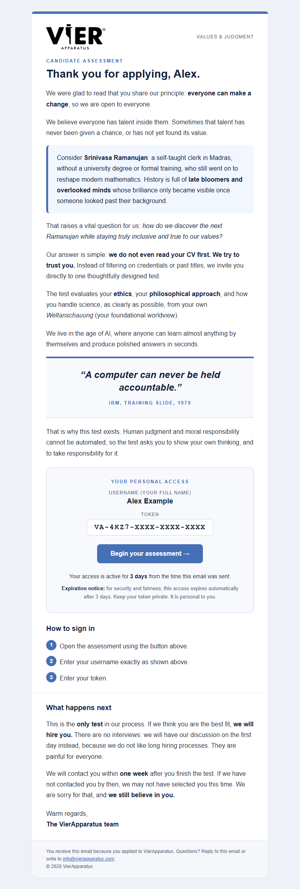
The V2 template rendered with fictional values and a masked token
The template is a single HTML file with inline styles and tables, so mail clients render it consistently. It carries an introduction to the principle behind the process, the reason for the test, a card with the username, the token, a button and the expiry notice, three sign-in steps, and what happens next.
In VierCRM it is stored as an HTML template with a live preview. Merge fields such as {First Name | fallback: there}, {Full Name} and {token} are filled from the applicant's record and HTML-escaped. An automation sends it on a schedule, only when the token and e-mail fields are not empty. New automations start off and in test mode, and a global “Allow sending” switch must also be on, so nothing goes out by accident.
The e-mail quotes a line attributed to an IBM training slide from 1979: “A computer can never be held accountable.” It is the idea behind the whole test: people stay responsible for what they publish and act on, even when AI helped them.
When a candidate submits, the server checks that both written responses, the claims answers and at least one reply in each commentary case are present. Then, in a single database transaction, it locks the session as completed, builds a frozen snapshot of what the candidate saw and wrote, builds the evidence draft, and queues exactly one e-mail in an outbox. Later edits cannot change what was submitted.
The e-mail goes out through Resend. If it fails, it is retried with exponential backoff (5 minutes, doubling, capped at 6 hours, up to 8 attempts), and the daily maintenance job retries too. Sending never fails the submission itself. The message carries the candidate's full name, the e-mail address that came with the token request, a submission reference, the assessment version, the AI-use declaration and the full responses. The link between a response and its credentials is the candidate's session row, created when the token was issued for one VierCRM record.
The reviewers' area shows the same material plus an evidence summary of observed facts. It sets no score. The reviewer records a level for each dimension with written reasoning.
Why the assessment looks the way it does
The assessment is built around frameworks, not conventional interview questions. It has five sections: two written ethical scenarios, a claims-and-sources exercise, a commentary exercise, and an optional About-yourself section that is never scored. I describe the thinking here; the scoring descriptors and the claims answer key are deliberately not published, so no candidate can read what a high score looks like in advance.
AI is allowed, and declared
We cannot realistically fight AI, and AI is already part of everyday work. The assessment does not try to detect it. Candidates declare whether they used AI, which tools and how, and the questions look at how they question, verify and take responsibility for what they submit. A candidate who uses AI thoughtfully and checks its output may show better judgment than one who refuses it.
The questions are written so that a generic answer shows little. Take “How would you approach and support the person without making them feel judged, pressured, or uncomfortable?” An AI system quickly finds the keywords (empathy, patience, respect, listening, boundaries) and writes something like:
“I would approach the person with empathy, patience, and respect. I would listen without judging them or forcing them to share more than they feel comfortable with. I would let them know that they are not alone.”
Nothing in that is wrong. It just does not show that the writer can do any of it. So the scenario ends with “Explain what you would actually do, why you would do it, and what you would avoid doing.” What would you say? How would you recognise that professional help is needed? What would you avoid, and why? Repeating ethical words is cheap. Explaining how they become a decision is not.
Ethical reasoning
Scenario 1 describes a colleague with depression and suicidal thoughts and asks how to respond with compassion while keeping boundaries. Five traditions are deliberately in play:
Aristotle: practical wisdom (phronesis). Good intentions are not good judgment.
Gilligan’s ethics of care: recognise vulnerability, but care does not demand unlimited self-sacrifice.
Kant: the colleague is a person with dignity, not a means to productivity.
Mill: respect autonomy until a foreseeable serious harm justifies professional help.
Consequentialism: moving all the work to someone else only creates a new problem.
The aim is not vocabulary. It is whether the principles show in what the candidate would actually do.
Microeconomics and responsibility
Scenario 2 introduces opportunity cost, marginal utility and diminishing marginal returns, and asks the candidate to allocate scarce hours, AI resources and colleagues' different capacities. It looks for prioritisation, trade-offs, and the point where more work starts to lower quality or well-being.
It is a counterweight to “maximise output”. Doing more is not always creating more value.
Fact-checking and epistemic responsibility
AI can write convincing text with wrong numbers or invented references. The candidate receives an AI-written summary of a small cytotoxicity experiment, with eight claims and its reference list, and for each claim decides to retain, revise or reject it, with a reason. For three claims they check whether the cited paper supports the statement.
It looks for the habit: separate the claims, find the original source, tell a primary study from a report about it, check that the source says what is claimed, name uncertainty, and correct rather than defend. “I cannot tell from the materials” is a valid answer.
Criticism and logical reasoning
Five fictional posts about science, each with six to eight comments, some harsh, emotional or discriminatory. The candidate replies to those they choose, which recalls the online disinhibition effect: people say online what they would not say face to face.
It looks for why an argument is weak (attack on the person, appeal to authority, straw man, false dilemma, hasty generalisation, appeal to popularity, circular reasoning), the valid point inside a poor argument, and a constructive reply. Naming a fallacy is not the goal; explaining it is.
Openness and inclusion
Science stays open to questioning and is not limited by ideological, religious, institutional or personal authority. The comments include remarks that dismiss someone's faith or discriminate. Neutrality does not mean every claim is equally credible: evidence decides, not the identity or beliefs of the person making the claim. The aim is people who challenge ideas without discriminating against individuals.
Emotional regulation
The same material shows how a candidate behaves when provoked: noticing a reaction, not replying on impulse, disagreeing without personal attacks, knowing when to disengage, admitting a misunderstanding, keeping boundaries. Nobody is expected to feel nothing. The question is whether a passing reaction decides the behaviour.
What it cannot do
It combines philosophical ethics, microeconomic reasoning, epistemology, scientific criticism and organisational judgment to see how people think, not what they claim to believe. A written test cannot reveal a personality or predict future behaviour. It is a structured source of evidence about reasoning, communication, openness, judgment and self-awareness, read by people who record their own levels and reasons.
The screens
Every image below comes from the real code running locally, with fictional people and fictional answers. Tokens are masked in the pixels themselves.
VierCRM: the applicant base after Issue tokens. Tokens are masked.
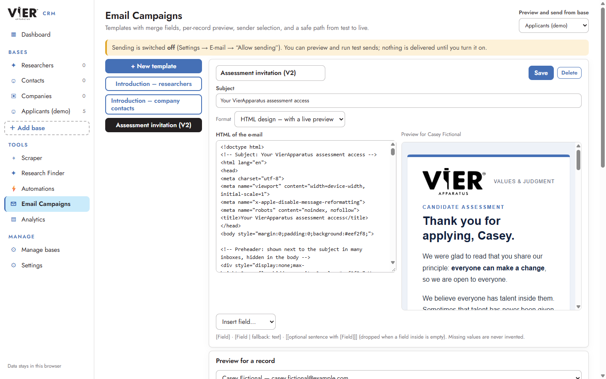
VierCRM: the invitation as an HTML template, with a live preview.VierCRM: the automation. It starts off and in test mode.
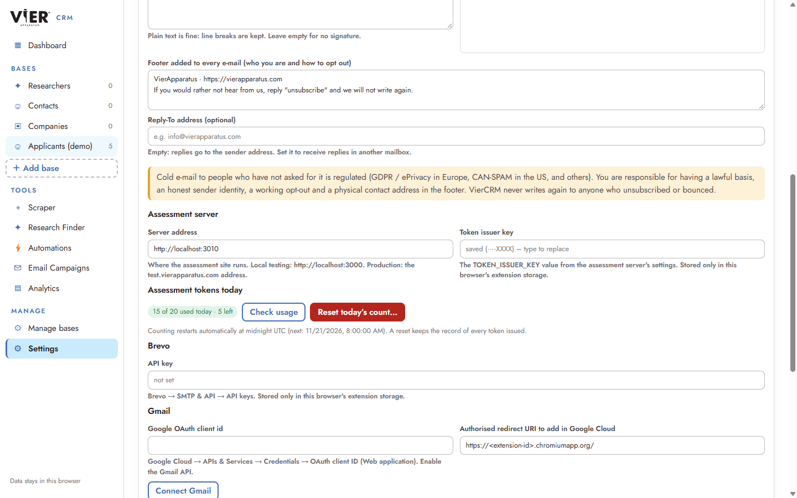
VierCRM settings: the server address, the issuer key (masked) and the daily count.
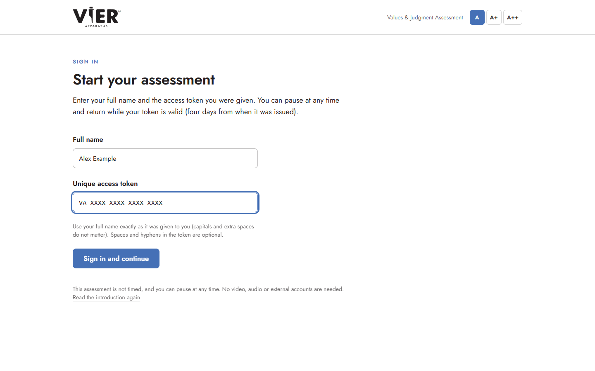
Sign-in: full name and token (a masked placeholder is typed here).Overview: five sections, no timer, answers saved as you go.
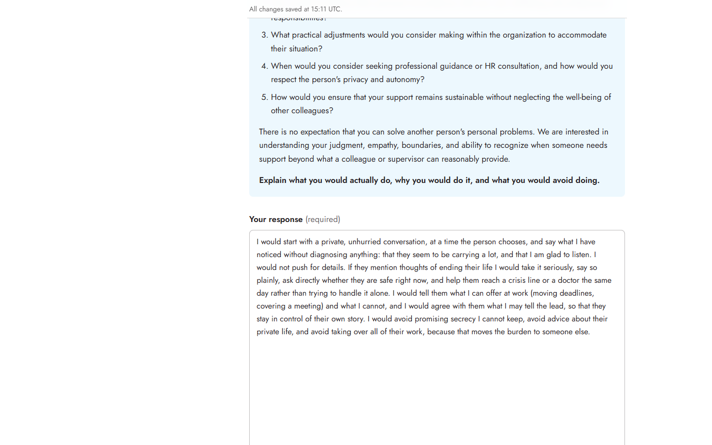
A written scenario, ending with “what you would actually do”.
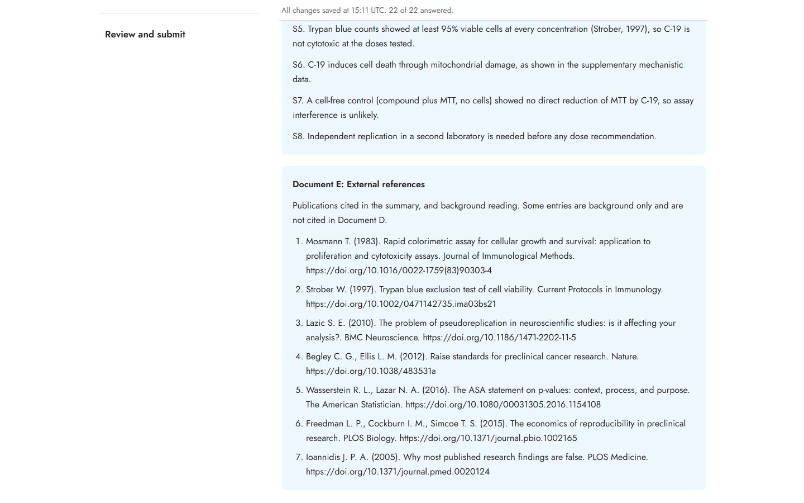
Claims and sources: judge the summary, check the citations.Review and submit, with the AI-use declaration.
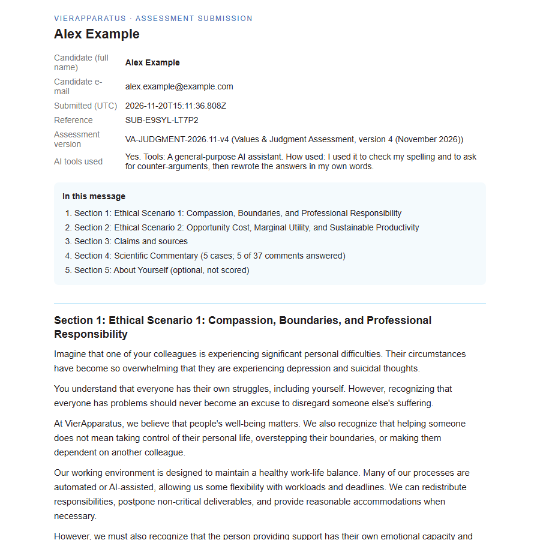
The notification e-mail that reaches the reviewers.The reviewer area: evidence summary, not a decision.Commentary: a reply under one comment.
Source, impact and limits
Source. The portal, its tests, the architecture notes, the design rationale and the invitation template are in a public repository. The reviewers' scoring descriptors, the claims answer key, all environment values and all applicant data are not.
Checks. When published, the typecheck was clean and 124 unit tests, 53 content checks and 92 end-to-end checks passed against a locally built server.
What it changes in practice. Issuing a credential is one action on selected records, and once the automation is switched on the invitation goes out without hand work. The result arrives as one e-mail. Every applicant gets the same test, and the reviewers receive the results in one consistent format.
Limits I would state plainly. I have no outcome data, so I make no claim that the test predicts job performance. The reviewer area uses one shared password and should move to individual accounts. The plain token also sits in the VierCRM record, so access to that base must be limited. Photos in the optional section are personal data and need a retention rule. The invitation template says access lasts three days while the server issues four, and the two should be aligned.
Case study · Production tool
VierVideo: an HTML-based video studio
A Windows desktop app that turns an HTML animation into an MP4 with narration. It exists because AI-written animations are cheap to make and awkward to change. The feature list below is what the code does and what I verified by running the app; limits are stated at the end.
The problem
Limited editability
An AI-made video arrives as HTML, CSS and JavaScript. Changing one visual element usually means finding it in the code, which is awkward for anyone who does not program, or asking the AI to regenerate the whole thing.
Difficult debugging
When something looks wrong, finding the element responsible can mean reading several files.
No audio workflow
HTML animations do not come with voice-over, text-to-speech or a way to mix sound.
Cost
Paid AI video subscriptions are not an option for every production task, and every regeneration costs again.
Speed
The AI is fast, but editing, inspecting, correcting and exporting the result is where the time goes.
The idea
Keep the speed and flexibility of AI-assisted production without making every change depend on editing source code. Instead of asking the AI to regenerate a whole video for a small change, give direct control over individual elements.Design principle
Architecture
Picture
The animation’s HTML page loads in an offscreen Electron window that is never shown.
A virtual clock replaces requestAnimationFrame, timers, Date and Math.random, so the same time gives the same picture.
A canvas recorder wraps the drawing calls so each painted part (text, line, box) can be picked and moved.
Timeline layers (text, shapes, images, HTML elements) are drawn over the page.
Frames are captured as PNG over the DevTools protocol and streamed to FFmpeg (H.264).
Sound
A script (TXT, Markdown, JSON or CSV) is parsed into timed segments.
A Python worker running Kokoro-82M synthesises each segment on the CPU and talks to the app in JSON lines over stdio.
Clips for narration, music and sound effects sit on timeline tracks.
One FFmpeg filter graph trims, sets volume, fades, delays, sums, pads and limits them.
Mux: the video stream is copied, the mix is encoded as AAC, and the result is one MP4.
The app is Electron 45 with a React 19 interface. The main process owns the open project and every IPC handler, a preload script is the only bridge, and the document format, timeline model, narration parser and audio-mix planner are pure functions shared by both sides. A project is a folder with one JSON document and an assets/ folder. Files are copied in by checksum, originals are never changed, and every change is written atomically with a backup copy. Project media is served through custom URL schemes that only reach that project’s own folders.
What it does
Visual studio
A large view of the same frame the export uses, with a layer list, rulers, a grid with snapping, marquee selection, grouping, corner-handle resizing and zoom and pan.
Inspect and edit elements
Click a part of the animation. For a canvas part the studio shows its kind, text, size and position; for a DOM element it shows the source lines that name it. Drag it, and the offset is stored in the project, keyed to the part and to the stretch of video where it is the same part. Reset puts it back.
HTML element layers
Paste the HTML of one element, or choose a file. It is sanitised (comments, scripts, frames, plugins, event attributes and javascript: addresses are removed) and drawn in a shadow root over the animation, so its styles cannot leak. It is drawn as a picture at each frame; scripts do not run.
Checking the HTML
There is no separate HTML validator, and I do not claim one. What exists: the render session warns when an animation never asks for an animation frame, so its motion would be missing; pasted elements are sanitised; and the code view lets you read and edit the source, with the imported original kept for “Restore original”.
Development mode
View › “Developer tools for the animation” opens the animation’s own page in a window with Chromium DevTools: its elements, styles and console. The app’s own DevTools are a separate menu item, because the preview itself is drawn in a hidden window.
Text-to-speech
Eight Kokoro-82M voices, speed from 0.7x to 1.3x, generated on the CPU and offline after the first model download. Segments carry a status (not generated, ready, changed, failed) and are cached by text, voice and speed. “Vier” is spoken as “veer” through a pronunciation rule.
Reading Markdown, JSON and TXT
TXT with [00:04 - 00:09] ranges (SRT and WebVTT cue timing is also recognised), JSON with a list of segments (start, end, text), CSV, and Markdown, where emphasis, links and code marks are removed before the text is spoken. Plain prose is split into sentence-sized segments.
Production and export
MP4 only: H.264 (libx264, yuv420p, CRF 18) with AAC audio at 192 kbps. Aspect ratios 9:16, 16:9 and 1:1, at 30 or 60 fps. The default capture is frame by frame on the virtual clock; a real-time mode exists. A cancelled export leaves no partial file.
The running application
These are screenshots of the real built app running its example project (an FTIR spectroscopy animation), captured by driving it over the DevTools protocol. Nothing is a mock-up.
The main interface with the example project: assets, preview, project settings and timeline.
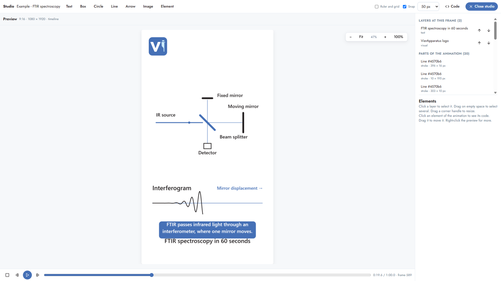
The studio: layers at this frame and the parts of the animation.Element inspection: a text painted on a canvas, with its box.
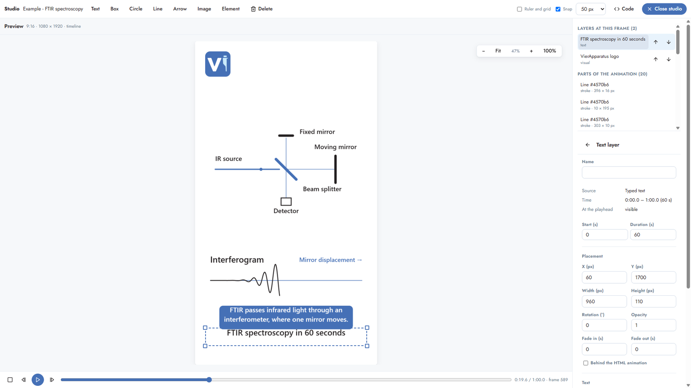
A layer, with position, size, rotation, opacity and fades.Editing an element: the label was dragged and the move is stored in the project.
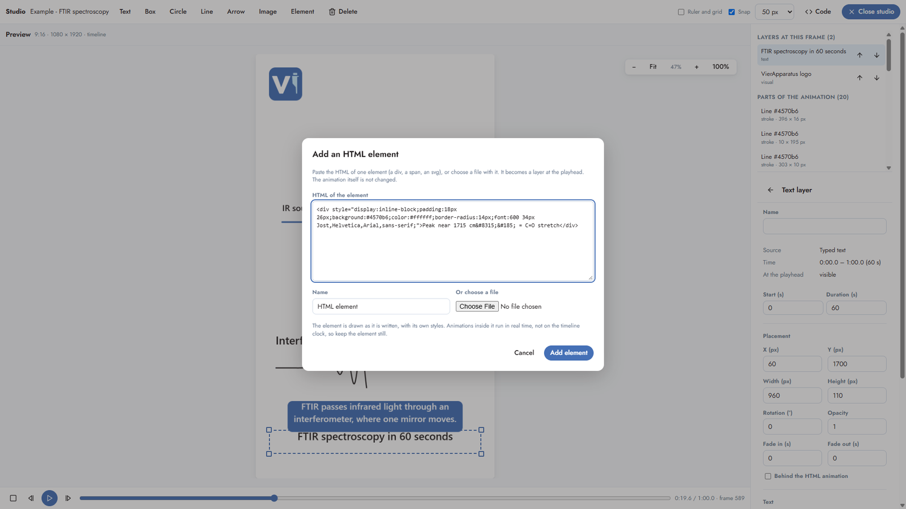
Adding an HTML element: paste its HTML or choose a file.The element as a layer over the animation.
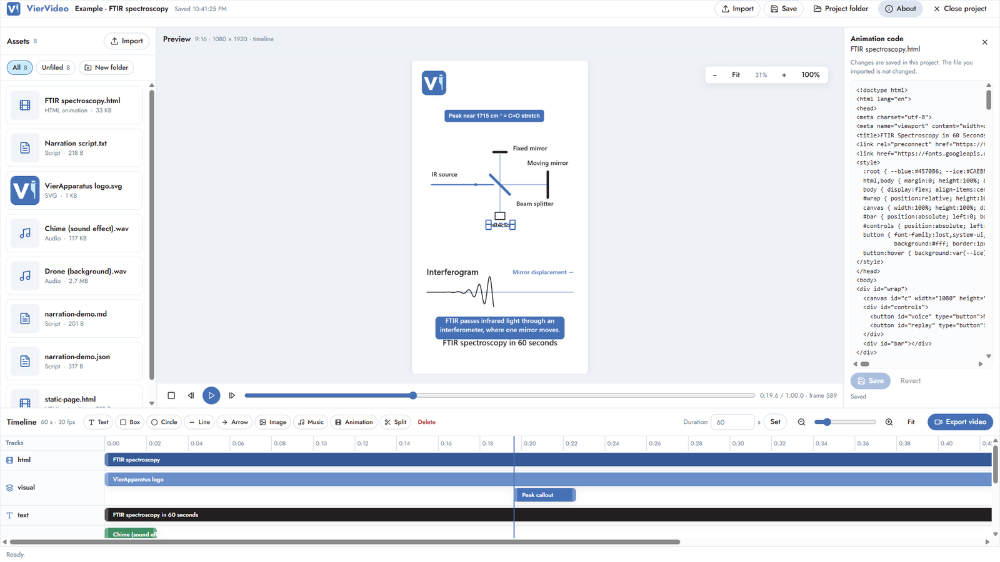
The animation’s code, editable, with the original kept.
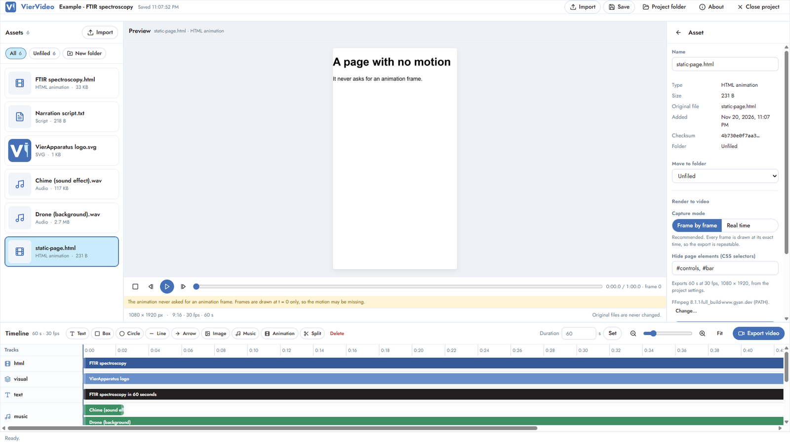
Render check: a page with no motion gets a warning.Development mode: the animation’s own DevTools window.
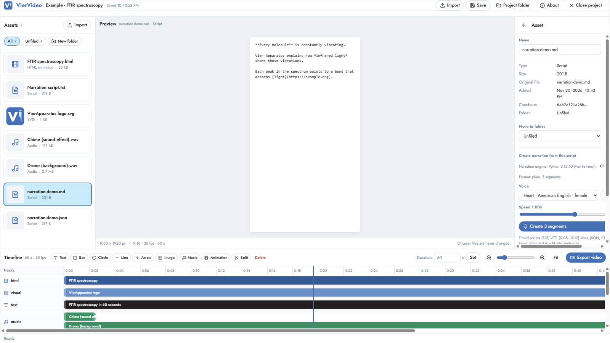
A Markdown script: markdown marks are removed before speech.A JSON script with timed segments.
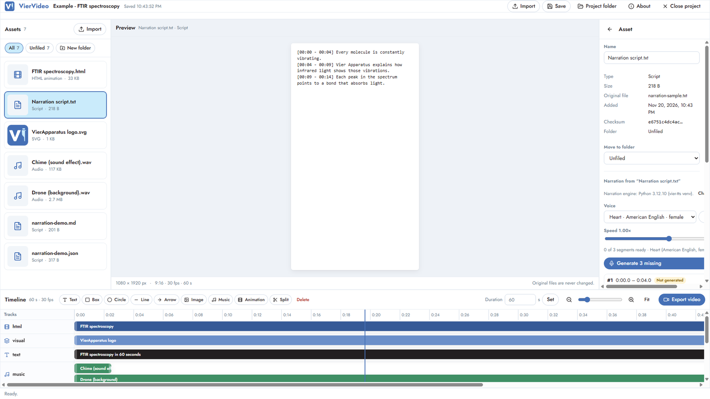
A TXT script with timed lines.
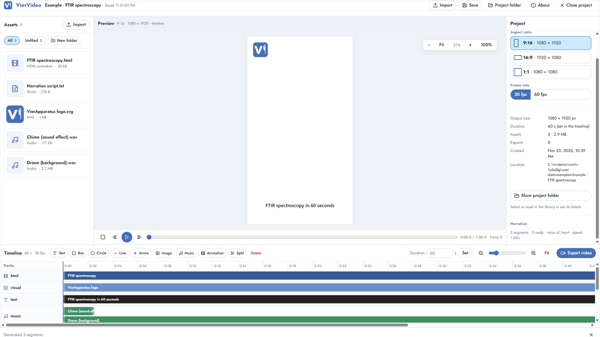
Text-to-speech: three segments generated and ready.
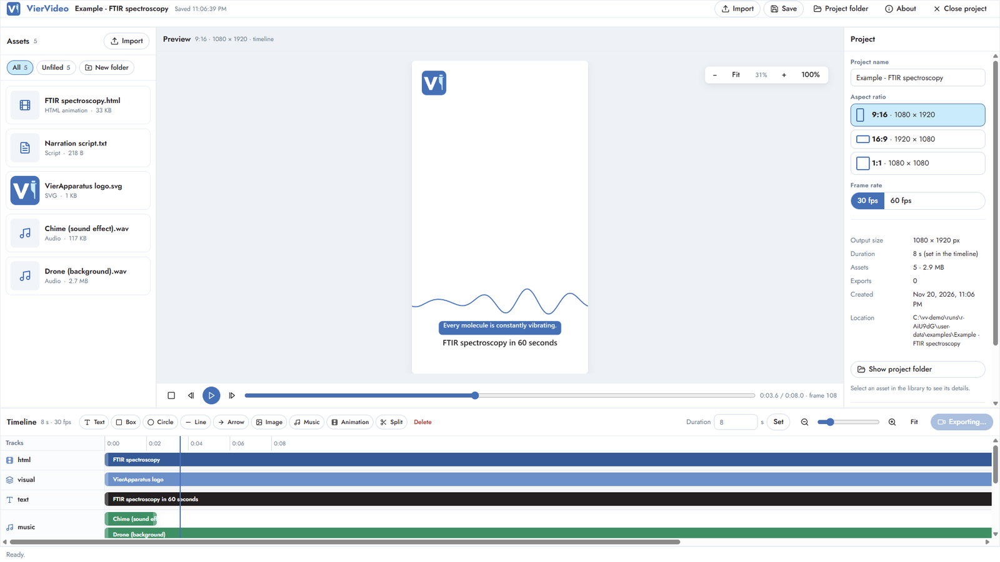
Export in progress.Export finished: 240 frames, sound from 2 clips.
Source, impact and limits
Source. The whole app, its developer description, plan and test results are in a public repository.
Checks. When published, the typecheck was clean and 166 unit tests passed. End-to-end suites drive the built app over the DevTools protocol, including a real narration and export run that checks the audio of the resulting MP4.
In practice. On my development machine an 8-second, 30 fps export (240 frames, two audio clips) took about 45 seconds. The first narration after starting the app takes about a minute and a half while the model loads, then about five seconds per short segment. Rendering is slower than real time.
Limits. Windows is the only tested platform. The installer is unsigned and was tested only on the development machine. Canvas parts are picked by their box, not their outline, and a part that moves very fast is not followed across frames. HTML element layers are pictures: their scripts do not run. Groups are one level deep. Export is MP4 only. There is no stand-alone HTML check or HTML export.
Featured Projects
Systems I've built and shipped
One public, open-source build alongside the private client and internal systems, shown with architecture and tech stack, and a real repo link where one exists.
Internal · View-Only Preview
RevOps Operating System: Multi-Industry Template
A 21-tab Revenue Operations spreadsheet system covering Property, Hospitality (hotel & restaurant), EXIM/Trading, and B2B SaaS, turns raw leads, pipeline, revenue and cash data into KPIs, forecasts, funnel conversion and revenue-leakage analysis automatically, with every target centralized in one editable Settings tab and nothing hardcoded into a formula.
Built a Settings-driven benchmark engine (Industry → Segment → Metric → Warning/Target/Excellent) so every KPI's traffic-light status traces back to one editable table instead of a number buried inside a formula.
Modeled each industry's actual economics instead of forcing one template on every business, landed cost (not supplier price) for EXIM margin, RevPAR/ADR for hotels vs. covers/RevPASH for restaurants, segment-specific Days-on-Market for property.
Automated MRR movement accounting for SaaS (new / expansion / contraction / churn) so NRR and GRR are computed from starting MRR only, never inflated by new-business revenue.
Generated the full workbook, formulas, dropdowns, conditional formatting, charts, from one deterministic Python/openpyxl build script rather than hand-built, so it's fully regenerable and version-controlled.
A batched, source-verified research pipeline that builds a curated business-development database for an Indonesian property business, real people and companies across real estate, legal, architecture, hospitality, wealth, and more, each with a verification source and priority score, not a scraped directory dump.
Orchestrated parallel research agents per category cluster (agencies, international markets, legal/tax, architecture/hospitality, wealth/relocation, media/proptech), each independently web-verifying every record against an official site, LinkedIn, or press source before inclusion.
Built a cross-batch deduplication pipeline (exact + targeted near-duplicate review) so the database can be extended batch after batch without re-adding the same prospect under a slightly different name.
Automated push to Google Sheets via a service-account-authenticated Sheets/Drive API client, with continuous ID numbering so the two live tables (People, Companies) grow cleanly across research batches.
Generated this redacted duplicate programmatically from the live dataset, every cell in sensitive columns masked after 3 characters, category/country/priority metadata left visible to show scope without exposing real prospects.
The tracking and analytics layer running behind this very portfolio, a lightweight, self-hosted alternative to Google Analytics built specifically for a personal site, with no third-party analytics vendor and no separate database.
Built a TypeScript tracking client that generates visitor/session identifiers, classifies every click (downloads, socials, internal navigation, project opens, external links) through one delegated listener, and captures UTM attribution for the whole session.
Built Vercel Serverless Functions that validate and rate-limit incoming events, enrich them with geo (via Vercel's own edge headers) and parsed browser/OS/device data, then append rows to Google Sheets via a service-account-authenticated Sheets API client, no Apps Script, no separate database.
Implemented returning-visitor and visit-count logic that reads prior sessions (not just prior rows) to stay correct within a visitor's very first session, plus a single per-session email notification via Gmail SMTP.
Built a password-protected admin dashboard reading live from the sheet, 15 stat cards, 16 charts (Chart.js, colors validated for colorblind-safety against this site's own dark theme), and a searchable/sortable/filterable event table with CSV export.
A 12-page sales pitch for a real commercial land listing, turning a scattered folder of certificates, tax records, and site photos into one persuasive, fully on-brand narrative a buyer can act on. Structured the way a serious buyer actually works through a deal: what the property is and why it matters, the setting and access, the legal record, the opportunity, and the commercial terms, every claim traced back to an actual document instead of sales fluff, so the credibility does the closing.
An end-to-end automation pipeline connecting Zoom recordings to Google Drive, Airtable, and Gmail, automatically archiving, evaluating, and reporting on coaching and client meetings without manual review.
Make.comZoom APIGoogle DriveAirtableGmail
Internal · Private
HR Resume Automation System
A structured resume-generation and redesign system that produces consistent, print-ready HTML/PDF resumes from structured candidate and internal-profile data instead of manual formatting.
Strategic ThinkingAnalytical & Critical ThinkingCross-Functional CollaborationData StorytellingAdaptabilityMultilingual Communication
Marketing Portfolio
See the campaigns behind the numbers
A curated deck of notable creative and campaign work, including the Silk Road Group opening campaign, Rouge International/Ventures content, and Pawitra Biotech's content system, with real performance screenshots.